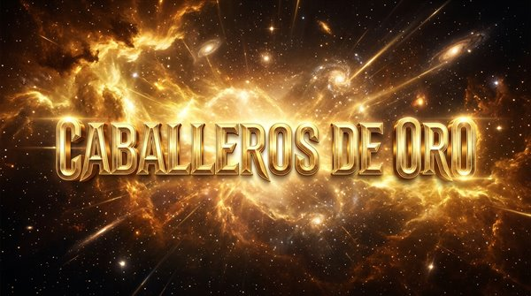
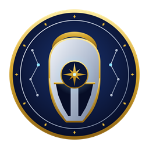
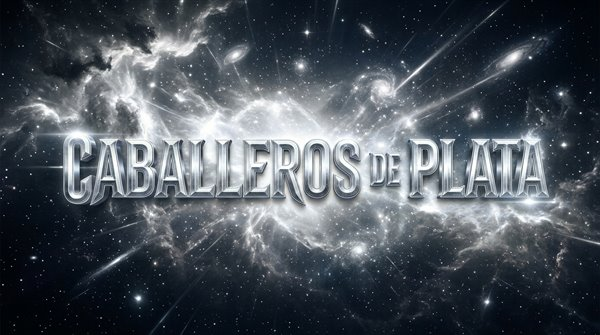
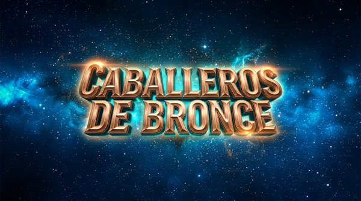
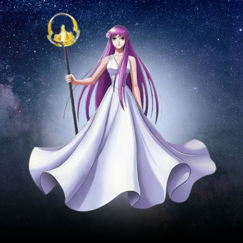

Caballeros de Oro
Los doce guardianes de las casas zodiacales.

El universo de los Caballeros del Zodiaco
EL COSMOS NUNCA DEJA DE ARDER
Descubrí el universo de Saint Seiya, sus guerreros, sus armaduras y las batallas que marcaron una época.
Explorar personajesConocé a los guerreros que protegen el Santuario y a los personajes que forman parte de esta historia.

Los doce guardianes de las casas zodiacales.

Guerreros de gran poder al servicio de Atenea.

Los jóvenes guerreros que defienden a Atenea.

Dioses, aliados y figuras importantes de la historia.
Buscá por nombre, armadura o técnica. No importa a qué categoría pertenezca.
Seleccioná una categoría o buscá un personaje.
Explorá otros espacios para conocer más sobre Saint Seiya.
Información general sobre la historia y sus personajes.
Conocer másUna enciclopedia de personajes, armaduras y técnicas.
Visitar la wiki